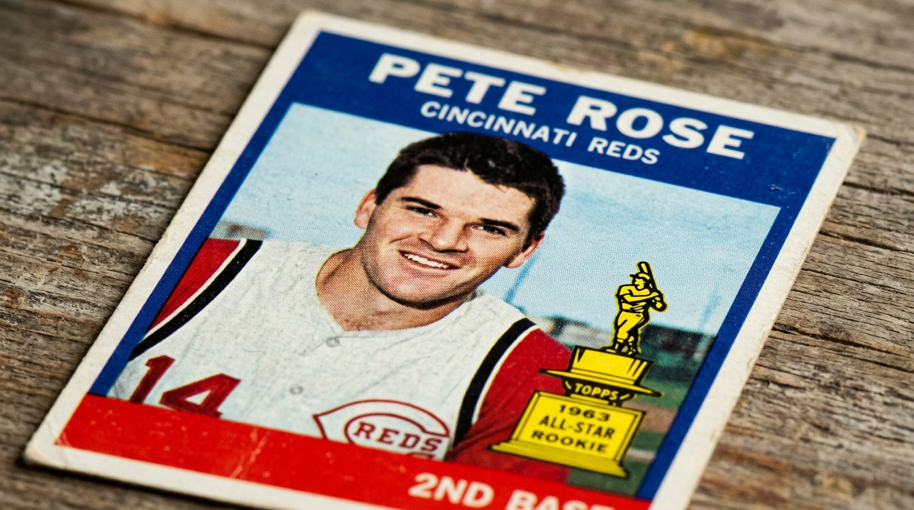
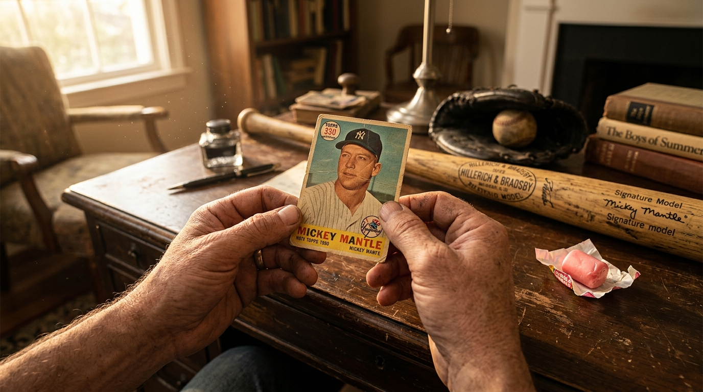

It’s 1964. Baseball is played on natural grass, uniforms are made of flannel, and a young kid from Cincinnati is sliding headfirst into second base, kicking up a cloud of dirt that will define a generation of the sport.
This isn't just a piece of vintage cardboard. The 1964 Topps #125 is the Genesis of "Charlie Hustle."

While his 1963 rookie card forced him to share the spotlight with three other players, this is the card where Pete Rose finally stands alone. Emblazoned with the iconic golden Topps '1963 All-Star Rookie' trophy cup, this card captures a 23-year-old Rose staring down the barrel of a career that would shatter records and ignite decades of debate.
When you hold this card, you aren’t just looking at the stats. You are holding the raw, unapologetic grit of mid-century American baseball. You can almost hear the crack of the wooden bat; you can almost smell the bubblegum dust it was packed in 60 years ago.

For the curator who understands that a collection is only as strong as its history, this Excellent-condition artifact is a mandatory cornerstone.
Custodians of the game: Inquire to secure this piece of the 1964 diamond.